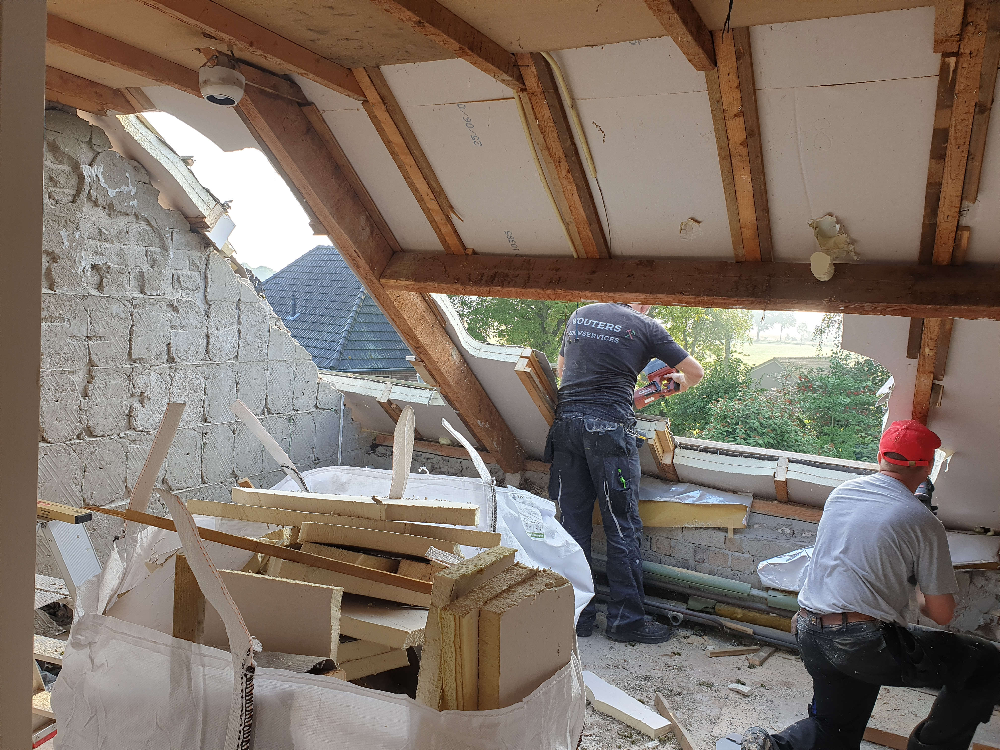

De badkamer en stucwerk 2: we zijn er bijna.....
12 September, 2021


1e foto: nu nog de WC, 2e foto: alleen het water nog in het bad (en de kraan) en dan kunnen we!
Op 2 september is dus de badkameraannemer begonnen en nu zie je al bijna een badkamer die af is, een week later! De tegels zitten aan de muur, het bad en douchebak zitten erin, de hoek voor de WC is ook gemaakt. Een mooi betonnen vloertje ligt er al, zodat komende week de PVC planken gelegd kunnen worden. Ook de WC beneden is nu bijna klaar. Mist nog een aantal tegels, want het waren er niet genoeg. Daarnaast waren de tegels in de badkamer net genoeg doordat we andere tegels hebben laten zetten achter de WC. Daarvan hadden we er dan weer veel te veel.... Maar goed, het resultaat is wel mooi geworden. Ook de stucadoor is deze week hard aan het werk geweest. De meeste muren zijn nu klaar, alleen alle plafonds nog, dat komt dan de komende week. Eind van de komende week moet het er dan toch wel weer een beetje bewoonbaar uitzien, ook het raam van de dakkapel wordt er dan ingezet. En dan komt het weer op ons aan: schoonmaken..... Het hele huis is 1 heel groot stofnest.


1e foto: slaapkamer Yris gestuct (alleen het plafond nog), 2e foto: kamer Lotte gestuct (alleen het plafond nog). Je ziet hen al studeren! Ook onze slaapkamer is nu gestuct op het plafond na.
De badkamer en het stucwerk - 1
5 September, 2021


1e foto: de plek voor de WC, 2e foto: nog even wachten voordat we in bad kunnen
Op 2 september is de badkameraannemer begonnen. We hadden van te voren nog met Brugman een probleem omdat de tegels niet op tijd zouden zijn. Dat is na een aantal telefoontjes opgelost en de tegels werden ook op 2 september afgeleverd. Verder nog de badkamer spullen, zonder de kast, waskommen en bovenkast, deze zijn ook verlaat (zucht). Maar goed, zo op zondag zie je al weer iets dat op een badkamer begint te lijken!


1e foto: kamer van Yris met gipsplaten, 2e foto: kamer van Lotte met gipsplaten.
Er begint schot in te komen
1 September, 2021
foto links: de 2e volle container, foto rechts: de hal boven, nu zonder behang, maar met vlizotrap.
Vorige week is een volle 10m3 container opgehaald (zie foto) en we zijn er zeker van dat hij voor elk gaatje is opgevuld! Denk dat er voor meer dan 10m3 inzat qua gewicht. En weer een nieuwe container laten plaatsen, nu 6m3. Hopelijk is dat voldoende voor wat er nog verder komt aan afval. Ook de vloer uit de studeerkamer beneden is er nu toch helemaal uit, wat ook weer wat m3 heeft opgeleverd en een verbazing bij ons over hoe het gebouwd is. Maar goed die vloer is er ook uit. Afgelopen weekend hebben we met ons 2en het nog resterende behang op de overloop weggehaald, leuk priegelwerk. We dachten dat we klaar waren en het apparaat terug konden brengen, maar toen bleek dat we nog een stukje waren vergeten, dus nog even door gepriegeld. Morgen begint de aannemer van de badkamer, dus eind volgende week moet het er alweer anders uitzien. De kamers van de dames en ook onze slaapkamer zijn nu zo'n beetje klaar met gips. Nu nog stucen en dan nog schilderen. Als laatste de vloer. Er zit progressie in, maar er moet nog wel veel gebeuren.
foto links: onze slaapkamer afgetimmerd, foto midden en rechts: kamer Yris voor en na het aftimmeren.
De opbouw is begonnen
21 Augustus, 2021
De eerste dagen stonden in het teken van afbraak en uitruimen maar nu is de wederopbouw langzaam zichtbaar. Doordat alle draagbalken krom zijn en de muren ook niet echt haaks ging er veel werk zitten in het stroken van de latten waaraan het gips dan geschroefd wordt. Op de eerste slaapkamer zijn de timmerlieden al begonnen. De komende week komen de electricien en loodgieter om nieuwe leidingen achter de knieschotten te leggen zodat deze daarna ook met gips bekleed kunnen worden. De stukadoor zal er daarna een mooi glad wandje van maken.
Vorige week zondag hebben we in onze nieuwe buurt een ommetje gelopen. Vlak achter ons huis begint een mooi stuk natuurgebied. Vele wandel en fietspaden en hier en daar los lopende runderen.
De verborgen Raamvallei.De Keuken en de grasmat
15 Augustus, 2021
Afgelopen vrijdag zou onze keuken dus uitgebouwd en opgehaald worden door Rohit, een handelaar in 2ehands keukens. Helaas bij aankomst bleek dat de keuken toch te gedateerd was en het voor hem niet haalbaar was de keuken er fatsoenlijk uit te halen, weer op te knappen en er ook nog wat aan te verdienen. De oven heeft hij meegenomen en ons geholpen de waterleidingen af te doppen. Voor iedereen die een iets betere keuken kwijt wil, hier een link naar de facebook pagina van Rohit. Lees hier ook zijn indrukwekkende levensverhaal.
Uiteindelijk hebben we met z'n tweeen de keuken eruitgesloopt. Het werkblad was loeizwaar maar onze timmerman Rein wilde wel even een helpende hand toesteken. De tweede container zit nu vol. Maandag maar een derde bestellen.
Zaterdag een rustig dagje. We hebben een nieuwe vloer uitgezocht voor in de studeerkamer (een deel van het huishouden noemt dit de "man cave"). Hierna dan voor de eerste keer gras gemaaid. We moesten toch even terug denken aan de hilarische sketch van Koot en Bie. Ik moet nog even wat algoritmes loslaten want de route moet iets efficienter kunnen
De komende week gaan de timmerlieden verder met het aftimmeren van de bovenverdieping. De electricien zal komen om de meterkast een update te geven en al het nodige aan te leggen voor de keuken en badkamer.
Opening van het zwembad
12 Augustus, 2021
Vandaag een rustige dag. De timmerman is begonnen alles op de bovenverdieping mooi uit te lijnen en regels te plaatsen zodat hier later de gipsplaaten tegenaan geschroefd kunnen worden. het was een mooie dag dus we hebben voor het eerst een sprong in het zwembad gemaakt. Lotte en Ilse al dobberend in een zwemband.
Aan het eind van de middag waren we uitgenodigd voor een bijeenkomst van het Waterschap. Er zijn plannen om het waterpijl bij ons in de omgeving te verhogen en daar wilden ze ons over informeren. Een goede gelegenheid om de mensen in onze direkte omgeving te leren kennen.
Morgen komt er iemand om de keuken uit te bouwen. Hierna zal het er weer anders uitzien.
Plaatsing Dakkapel
11 Augustus, 2021
Vandaag een spannende dag. De Dakkapel wordt geplaatst. Deze is naar ons ontwerp op maat gemaakt dus hopen dat alles past.
Om 07:30 stonden de mannen voor de deur en bij de koffie zat het gat al in het dak. We waren van te voren wel een beetje zenuwachtig. Je nieuwe huis zomaar kapot laten zagen doet toch wel iets. Gelukkig hadden we een mooie zonnige dag en ging alles voorspoedig.
Na de middag waren alle verstevigingen in het dak aangebracht en kon de hijskraan beginnen met het plaatsen van de dakkapel. Na een tijdje voorzichtig manouvreren stond hij dan op zijn plek. Alles is stevig vastgezet en dichtgekit. Helaas is bij het transport een ruit gebroken waardoor we het nog even met een stuk hout moeten doen. Morgen begint de aannemer met het opmetselen van de de vrijgekomen stukken muur en het aftimmeren van de binnenkant.
Sloopwerk is voltooid
10 Augustus, 2021
Het sloopwerk is voltooid. Een container van 10 kubieke meter vol met hout en een tweede container met puin is half vol
Morgen, Woensdag 11 Augustus komt de dakkapel erop en twee dakramen in de kleine slaapkamers
Het is ook een beetje vakantie
9 Augustus, 2021
Donderdag wordt er mooi weer voorspeld dus de 'Pool-girls' zijn al druk bezig met voorbereidingen.
Alles natuurlijk wel een beetje tranquilo.
Veel handen maken licht werk
7 Augustus, 2021
Op onze tweede dag als bewoners van dit huis hebben we hulp gekregen van Liese en Ernst. Natuurlijk waren ook Yris, Hilko en Lotte van de partij.
Het vakmanschap van Ernst en zijn gereedschap kwamen goed van pas. Aan het eind van de dag was al het grote breekwerk gedaan en konden we zelf beginnen met het afvoeren van het puin.


.jpeg)

.jpeg)
.jpeg)
.jpeg)

Na gedane arbeid is het goed toeven op het terras.

De nieuwe eigenaren
6 Augustus, 2021


Sinds vrijdag 6 augustus zijn wij de gelukkige eigenaren van dit huis in Escharen. Het is een boerderij uit 1912 die in 1984 omgebouwd is tot 2 wooneenheden waarvan wij de voormalige stal gaan bewonen. Achter en naast het huis ligt een prachtige tuin met vijver en zwembad.
De komende weken gaan we verbouwen. Van de hele bovenverdieping gaan we de jaren-70 schrootjes verwijderen en wordt alles nieuw afgetimmerd. De achterzijde van het huis krijgt een dakkapel over de badkamer en een slaapkamer. Tevens komen er een nieuwe badkamer en keuken in.
Over ons

Wij zijn Frank en Sandra. Na 10 jaar Zwitserland en 17 jaar Malden hebben we nu een stekje gevonden op het Brabantse platteland. We houden van buiten zijn en tuinieren en verwachten dat we hier ons hart kunnen ophalen.
In deze blog proberen we bij te houden wat er zoal bij ons gebeurt.